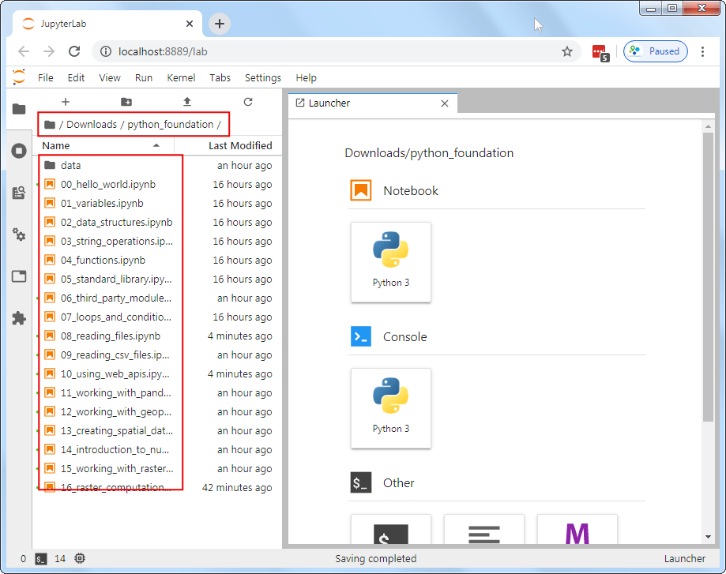
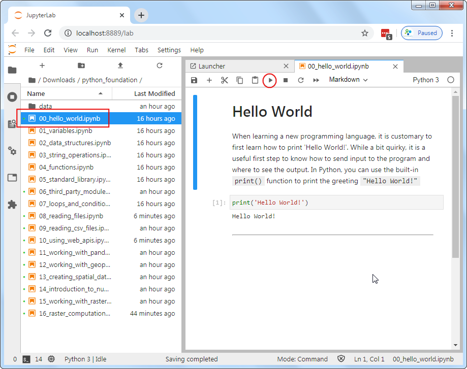
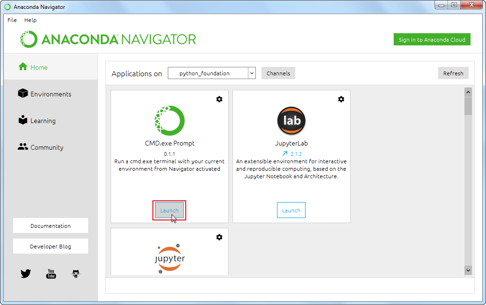
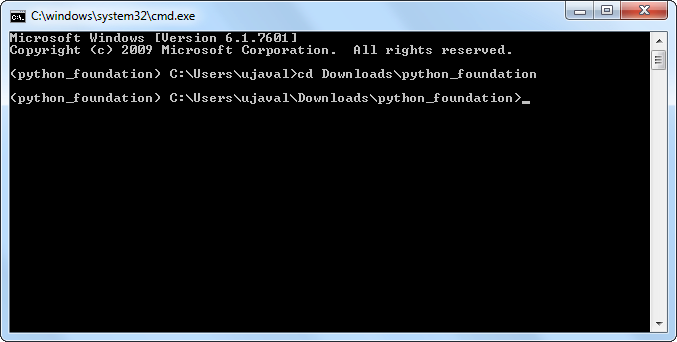
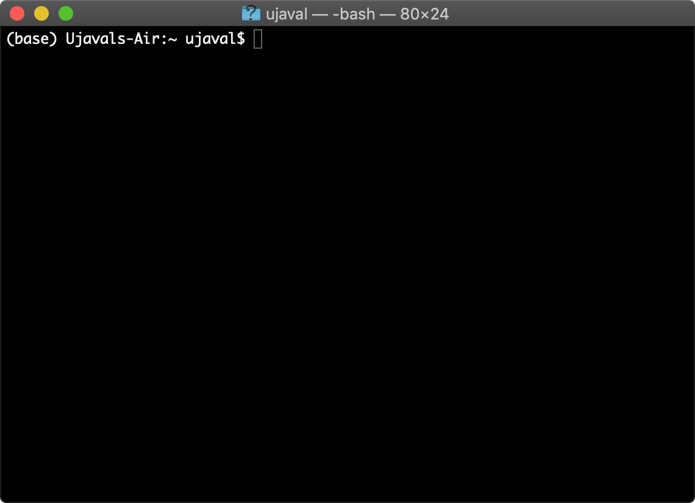
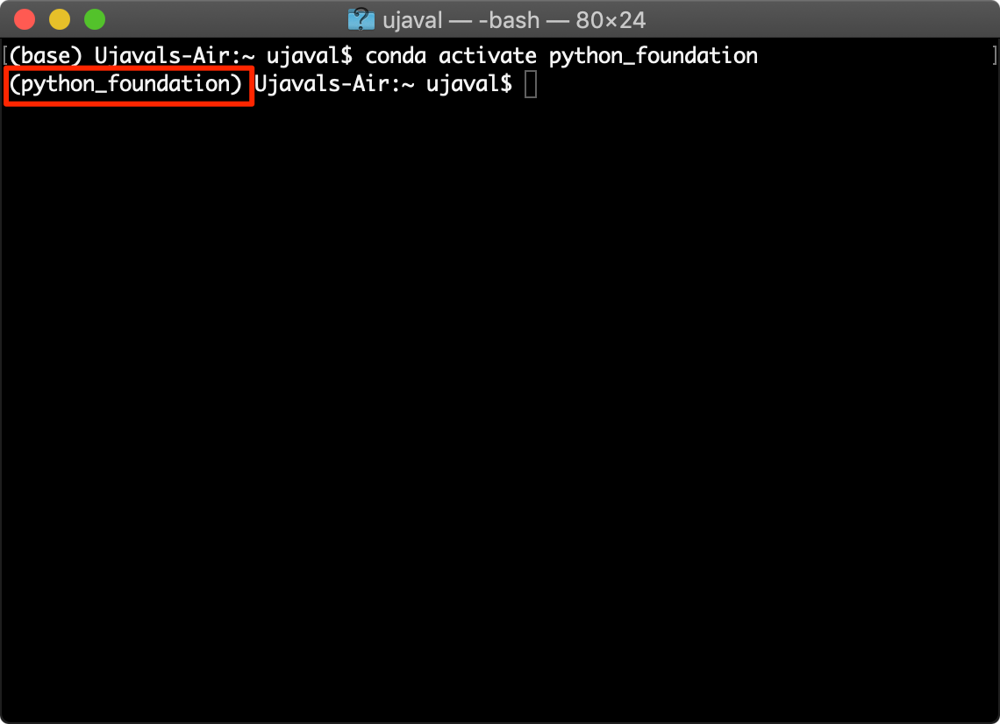
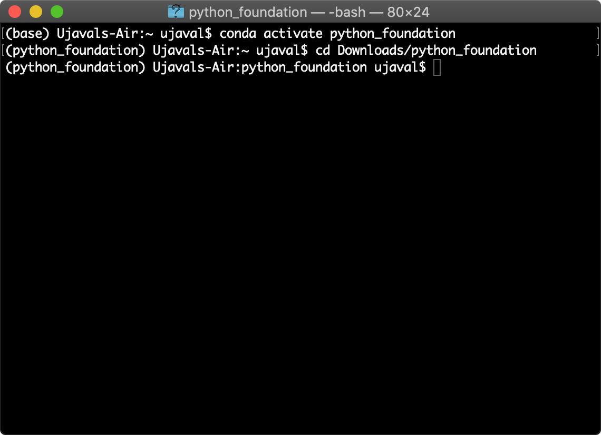
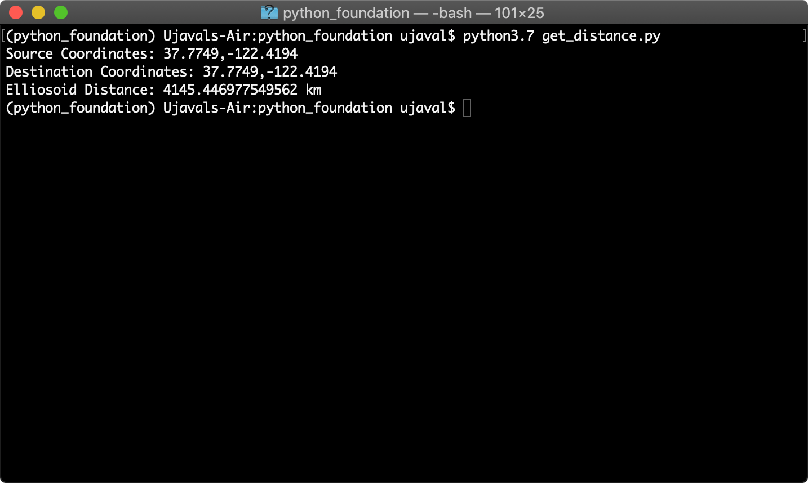

Python Foundation for Spatial Analysis (Course Material)
A gentle introduction to Python programming with a focus on spatial data.
Ujaval Gandhi
- Introduction
- Get the Data Package
- Installation and Setting up the Environment
- Using Jupyter Notebooks
- Hello World
- Variables
- Data Structures
- String Operations
- Loops and Conditionals
- Conditionals
- Functions
- The Python Standard Library
- Third-party Modules
- Reading Files
- Reading CSV Files
- Using Web APIs
- Working with Pandas
- Working with Geopandas
- Creating Spatial Data
- Introduction to NumPy
- Working with RasterIO
- Writing Standalone Python Scripts
- What next?
- Data Credits
- License

This course is also offered as an online class. Visit www.spatialthoughts.com/events to know details of upcoming sessions. You may also sign up for my mailing list to know when new sessions are scheduled.
Want to work through the material on your own? Purchase the data package.
Introduction
This class covers Python from the very basics. Suitable for GIS practitioners with no programming background or python knowledge. The course will introduce participants to basic programming concepts, libraries for spatial analysis, geospatial APIs and techniques for building spatial data processing pipelines.
Get the Data Package
The code examples in this class use a variety of datasets. All the required datasets and Jupyter notebooks are supplied to you in the python_foundation.zip file. Unzip this file to a directory - preferably to the <home folder>/Downloads/python_foundation/ folder.
Installation and Setting up the Environment
There are many ways to install Python on your system. Many operating systems comes with a Python distribution built-in too. If you use software such as QGIS - it comes with its own version of Python. Working on Python projects typically require installing third-party packages (i.e. tools). As these packages have different dependencies - they often cause conflicts and errors due to different versions of Python on your system.
An easy and reliable way to get a Python installation on your system is via Anaconda. For this course, we will use the Anaconda3 Individual Edition to install Python and required spatial analysis packages.
Many Python tool names have references to the reptile world. The default Python package manager is called Pip which references the process of hatching eggs. Interestingly, the naming of the Python language itself had nothing to do with reptiles.
- Download the Anaconda Installer for Python 3.7 (or a higher version) for your operating system. Once downloaded, double click the installer and install it into the default suggested directory. Select an install for Just Me and use default settings. Note: If your username has spaces, or non-English characters, it causes problems. In that case, you can install it to a path such as
C:\anaconda.

- Once installed, launch the Anaconda Navigator program. It is a good practice to create a new environment for each of your Python projects. An environment is a space where you will install required packages. Many packages may contain conflicting requirements which could prevent them all being installed into a single environment. Having a separate environment isolates your project from such problems. Click on the Environments tab.
Linux users can open a terminal and type
anaconda-navigatorto launch the program.

- Click the + Create button and name the environment as
python_foundation. Click Create.

- Once created, click the Channels button. A channel is a repository where packages are hosted. The default channel is good for most purposes. But some packages we require for this class are not available in the default channel, so we need to add another channel. In the Manage channels dialog, click Add and enter
conda-forge. Press Enter.
Learn more about conda-forge

- Click the Update Channels button.

- Once the update is done, search for the package
geopandas. This is a package that allows you to work with vector geospatial data in Python. Select the check-box next to the first result and click Apply to install the package with all its dependencies.

- Similarly, search and install the following packages
geopyrasteriomatplotlib

- Switch to the Home tab. Ensure that you have the python_foundation environment selected. We will now install some programs which allow us to write and execute Python scripts. From the home screen, install the
JupyterLabapplication. Windows users may optionally install theCMD.exe promptapplication.

- After the installation completes, click Launch button for the JupyterLab application. JupyterLab is a web application that allows you to write, document and run Python code. It allow you to interactively run small bits of code and see the results. It also support a variety of output formats such as charts or maps - making it an ideal platform for data science projects. The name Jupyter comes from the 3 primary programming languages it supports - Julia, Python and R. We will be using Jupyter notebooks for all exercises in this course.
Linux users can open a terminal and first switch to the correct environment using the command
conda activate python_foundation. After that, JupyterLab can be opened using thejupyter-labcommand.

- A new browser tab will open with an instance of JupterLab. Click the Python 3 button under Notebooks.

- Enter the following statements in the first cell and click the Run button. If nothing happens - it means your installation was successful!. If you get an ImportError, repeat the installation steps carefully again.
import geopandas
import geopy
import rasterio
Using Jupyter Notebooks
Your class data package contain multiple Jupyter notebooks containing code and exercises for this class.
- Launch the Anaconda Navigator program. Ensure that you have the python_foundation environment selected. click Launch button for the JupyterLab application. It will open your Web Browser and load the application in a new tab. From the left-hand panel, navigate to the directory where you extracted the data package.

- Jupyter notebooks have a
.ipynbextensions. Double-click on a notebook file to open it. Code in the notebook is executed cell-by-cell. You can select a cell and click the Run button to execute the code and see the output.

- At the end of each notebook, you will find an exercise. Before adding a new cell and attempting to complete the exercise, make sure you go to Run → Run All Cells to execute all the code in the notebook. Doing this will ensure all the required variables are avalable to you to use in the exervise.

Open the notebook named 00_hello_world.ipynb.
Hello World
When learning a new programming language, it is customary to first learn how to print ‘Hello World!’. While a bit quirky, it is a useful first step to know how to send input to the program and where to see the output. In Python, you can use the built-in print() function to print the greeting "Hello World!"
print('Hello World!')Hello World!Open the notebook named 01_variables.ipynb.
Variables
Strings
A string is a sequence of letters, numbers, and punctuation marks - or commonly known as text
In Python you can create a string by typing letters between single or double quotation marks.
city = 'San Fransico'
state = 'California'
print(city, state)San Fransico Californiaprint(city + state)San FransicoCaliforniaprint(city + ',' + state)San Fransico,CaliforniaNumbers
Python can handle several types of numbers, but the two most common are:
- int, which represents integer values like 100, and
- float, which represents numbers that have a fraction part, like 0.5
population = 881549
latitude = 37.7739
longitude = -121.5687print(type(population))<class 'int'>print(type(latitude))<class 'float'>elevation_feet = 934
elevation_meters = elevation_feet * 0.3048
print(elevation_meters)284.6832area_sqmi = 46.89
density = population / area_sqmi
print(density)18800.362550650458Exercise
We calculated the population density in number of people per square mile. Calculate and print the density in number of people per square kilometers.
- Hint1: 1 mile = 1.60934 kilometers
- Hint2: To calculate exponential of a number in Python, you use the ** notation. x² is written as x**2
Add the code in the cell below and run it. The output should be 7258.8966
population = 881549
area_sqmi = 46.89
# Remove this line and add code hereOpen the notebook named 02_data_structures.ipynb.
Data Structures
Tuples
A tuple is a sequence of objects. It can have any number of objects inside. In Python tuples are written with round brackets ().
latitude = 37.7739
longitude = -121.5687
coordinates = (latitude, longitude)
print(coordinates)(37.7739, -121.5687)You can access each item by its position, i.e. index. In programming, the counting starts from 0. So the first item has an index of 0, the second item an index of 1 and so now. The index has to be put inside square brackets [].
y = coordinates[0]
x = coordinates[1]
print(x, y)-121.5687 37.7739Lists
A list is similar to a tuple - but with a key difference. With tuples, once created, they cannot be changed, i.e. they are immutable. But lists are mutable. You can add, delete or change elements within a list. In Python, lists are written with square brackets []
cities = ['San Francisco', 'Los Angeles', 'New York', 'Atlanta']
print(cities)['San Francisco', 'Los Angeles', 'New York', 'Atlanta']You can access the elements from a list using index the same way as tuples.
print(cities[0])San FranciscoYou can call len() function with any Python object and it will calculates the size of the object.
print(len(cities))4We can add items to the list using the append() method
cities.append('Boston')
print(cities)['San Francisco', 'Los Angeles', 'New York', 'Atlanta', 'Boston']As lists are mutable, you will see that the size of the list has now changed
print(len(cities))5Another useful method for lists is sort() - which can sort the elements in a list.
cities.sort()
print(cities)['Atlanta', 'Boston', 'Los Angeles', 'New York', 'San Francisco']The default sorting is in ascending order. If we wanted to sort the list in a decending order, we can call the function with reverse=True
cities.sort(reverse=True)
print(cities)['San Francisco', 'New York', 'Los Angeles', 'Boston', 'Atlanta']Sets
Sets are like lists, but with some interesting properties. Mainly that they contain only unique values. It also allows for set operations - such as intersection, union and difference. In practice, the sets are typically created from lists.
capitals = ['Sacramento', 'Boston', 'Austin', 'Atlanta']
capitals_set = set(capitals)
cities_set = set(cities)
capital_cities = capitals_set.intersection(cities_set)
print(capital_cities){'Atlanta', 'Boston'}Sets are also useful in finding unique elements in a list. Let’s merge the two lists using the extend() method. The resulting list will have duplicate elements. Creating a set from the list removes the duplicate elements.
cities.extend(capitals)
print(cities)
print(set(cities))['San Francisco', 'New York', 'Los Angeles', 'Boston', 'Atlanta', 'Sacramento', 'Boston', 'Austin', 'Atlanta']
{'Los Angeles', 'New York', 'Sacramento', 'San Francisco', 'Austin', 'Atlanta', 'Boston'}Dictionaries
In Python dictionaries are written with curly brackets {}. Dictionaries have keys and values. With lists, we can access each element by its index. But a dictionary makes it easy to access the element by name. Keys and values are separated by a colon :.
data = {'city': 'San Francisco', 'population': 881549, 'coordinates': (-122.4194, 37.7749) }
print(data){'city': 'San Francisco', 'population': 881549, 'coordinates': (-122.4194, 37.7749)}You can access an item of a dictionary by referring to its key name, inside square brackets.
print(data['city'])San FranciscoExercise
From the dictionary below, how do you access the latitude and longitude values? print the latitude and longitude of new york city by extracting it from the dictionary below.
nyc_data = {'city': 'New York', 'population': 8175133, 'coordinates': (40.661, -73.944) }Open the notebook named 03_string_operations.ipynb.
String Operations
city = 'San Francisco'
print(len(city))13print(city.split())['San', 'Francisco']print(city.upper())SAN FRANCISCOcity[0]'S'city[-1]'o'city[0:3]'San'city[4:]'Francisco'Escaping characters
Certain characters are special since they are by Python language itself. For example, the quote character ’ is used to define a string. What do you do if your string contains a quote character?
In Python strings, the backslash \ is a special character, also called the escape character. Prefixing any character with a backslash makes it an ordinary character. (Hint: Prefixing a backslash with a backshalsh makes it ordinary too!)
It is also used for representing certain whitespace characters, \n is a newline, \t is a tab etc.
Remove the # from the cell below and run it.
# my_string = 'It's a beautiful day!'We can fix the error by espacing the single quote within the string.
my_string = 'It\'s a beautiful day!'
print(my_string)It's a beautiful day!Alternatively, you can also use double-quotes if your string contains a single-quote.
my_string = "It's a beautiful day!"What if our string contains both single and double quotes?
We can use triple-quotes! Enclosing the string in triple quotes ensures both single and double quotes are treated correctly.
latitude = '''37° 46' 26.2992 N'''
longitude = '''122° 25' 52.6692" W'''
print(latitude, longitude)37° 46' 26.2992 N 122° 25' 52.6692" WBackslashes pose another problem when dealing with Windows paths
#path = 'C:\Users\ujaval'
#print(path)Prefixing a string with r makes is a Raw string. Which doesn’t interpret backslash as a special character
path = r'C:\Users\ujaval'
print(path)C:\Users\ujavalPrinting Strings
Modern way of creating strings from variables is using the format() method
city = 'San Fransico'
population = 881549
output = 'Population of {} is {}.'.format(city, population)
print(output)Population of San Fransico is 881549.You can also use the format method to control the precision of the numbers
latitude = 37.7749
longitude = -122.4194
coordinates = '{:.2f},{:.2f}'.format(latitude, longitude)
print(coordinates)37.77,-122.42Exercise
Use the string slicing to extract and print the degrees, minutes and second parts of the string below.
latitude = '''37° 46' 26.2992 N'''Open the notebook named 04_loops_and_conditionals.ipynb.
Loops and Conditionals
For Loops
A for loop is used for iterating over a sequence. The sequence can be a list, a tuple, a dictionary, a set, or a string.
cities = ['San Francisco', 'Los Angeles', 'New York', 'Atlanta']
for city in cities:
print(city)To iterate over a dictionary, you can call the items() method on it which returns a tuple of key and value for each item.
data = {'city': 'San Francisco', 'population': 881549, 'coordinates': (-122.4194, 37.7749) }
for x, y in data.items():
print(x, y)city San Francisco
population 881549
coordinates (-122.4194, 37.7749)The built-in range() function allows you to create sequence of numbers that you can iterate over
for x in range(5):
print(x)0
1
2
3
4The range function can also take a start and an end number
for x in range(1, 10, 2):
print(x)1
3
5
7
9Conditionals
Python supports logical conditions such as equals, not equals, greater than etc. These conditions can be used in several ways, most commonly in if statements and loops.
An if statement is written by using the if keyword.
Note: A very common error that programmers make is to use = to evaluate a equals to condition. The = in Python means assignment, not equals to. Always ensure that you use the == for an equals to condition.
for city in cities:
if city == 'Atlanta':
print(city)AtlantaYou can use else keywords along with if to match elements that do not meet the condition
for city in cities:
if city == 'Atlanta':
print(city)
else:
print('This is not Atlanta')This is not Atlanta
This is not Atlanta
This is not Atlanta
AtlantaPython relies on indentation (whitespace at the beginning of a line) to define scope in the for loop and if statements. So make sure your code is properly indented.
You can evaluate a series of conditions using the elif keyword.
Multiple criteria can be combined using the and and or keywords.
cities_population = {
'San Francisco': 881549,
'Los Angeles': 3792621,
'New York': 8175133,
'Atlanta':498044
}
for city, population in cities_population.items():
if population < 1000000:
print('{} is a small city'.format(city))
elif population > 1000000 and population < 5000000:
print('{} is a big city'.format(city))
else:
print('{} is a mega city'.format(city))San Francisco is a small city
Los Angeles is a big city
New York is a mega city
Atlanta is a small cityControl Statements
A for-loop iterates over each item in the sequence. Sometimes is desirable to stop the execution, or skip certain parts of the for-loops. Python has special statements, break, continue and pass.
A break statement will stop the loop and exit out of it
for city in cities:
print(city)
if city == 'Los Angeles':
print('I found Los Angeles')
breakSan Francisco
Los Angeles
I found Los AngelesA continue statement will skip the remaining part of the loop and go to the next iteration
for city in cities:
if city == 'Los Angeles':
continue
print(city)San Francisco
New York
AtlantaA pass statement doesn’t do anything. It is useful when some code is required to complete the syntax, but you do not want any code to execute. It is typically used as a placeholder when a function is not complete.
for city in cities:
if city == 'Los Angeles':
pass
else:
print(city)San Francisco
New York
AtlantaExercise
The Fizz Buzz challenge.
Write a program that prints the numbers from 1 to 100 and for multiples of 3 print Fizz instead of the number and for the multiples of 5 print Buzz. If it is divisible by both, print FizzBuzz.
So the output should be something like below
1, 2, Fizz, 4, Buzz, Fizz, 7, 8, Fizz, Buzz, 11, Fizz, 13, 14, FizzBuzz, ...
Breaking down the problem further, we need to create for-loop with following conditions
- If the number is a multiple of both 3 and 5 (i.e. 15), print FizzBuzz
- If the number is multiple of 3, print Fizz
- If the number is multiple of 5, print Buzz
- Otherwise print the number
Hint: See the code cell below. Use the modulus operator % to check if a number is divisible by another. 10 % 5 equals 0, meaning it is divisible by 5.
for x in range(1, 10):
if x%2 == 0:
print('{} is divisible by 2'.format(x))
else:
print('{} is not divisible by 2'.format(x))1 is not divisible by 2
2 is divisible by 2
3 is not divisible by 2
4 is divisible by 2
5 is not divisible by 2
6 is divisible by 2
7 is not divisible by 2
8 is divisible by 2
9 is not divisible by 2Open the notebook named 05_functions.ipynb.
Functions
A function is a block of code that takes one or more inputs, does some processing on them and returns one or more outputs. The code within the function runs only when it is called.
A funtion is defined using the def keyword
def my_function():
....
....
return somethingFunctions are useful because they allow us to capture the logic of our code and we can run it with differnt inputs without having to write the same code again and again.
def greet(name):
return 'Hello ' + name
print(greet('World'))Hello WorldFunctions can also take arguments with a default value. This helps make calling the functions simpler for the default behavior while giving an option to pass on extra arguments.
lat = 37.7739
lng = -121.5687
def format_coordinates(latitude, longitude, separator=','):
return '{}{}{}'.format(latitude, separator, longitude)
print(format_coordinates(lat, lng))
print(format_coordinates(lat, lng, '|'))37.7739,-121.5687
37.7739|-121.5687The default behavior of Python functions is to take positional arguments. You pass the arguments in the order that is defined by the function. Python allows functions to be called using keyword arguments. When we call functions in this way, the order (position) of the arguments can be changed. The main advantage of using keyword arguments is to make the code more readable and explicit.
print(format_coordinates(latitude=lat, longitude=lng, separator=';'))37.7739;-121.5687Exercise
Functions can take multiple arguments. Let’s write a function to convert coordinates from degrees, minutes, seconds to decimal degrees. This conversion is needed quite often when working with data collected from GPS devices.
- 1 degree is equal to 60 minutes
- 1 minute is equal to 60 seconds (3600 seconds)
To calculate decimal degrees, we can use the formula below:
If degrees are positive:
Decimal Degrees = degrees + (minutes/60) + (seconds/3600)
If degrees are negative
Decimal Degrees = degrees - (minutes/60) - (seconds/3600)
Delete the pass statement and replace it with the code for the formula. If the code is correct, you should see the result 37.773972 -121.56869
latitude = (37, 46, 26.2992)
longitude = (-121, 34, 7.32)
def dms_to_decimal(degrees, minutes, seconds):
pass
# Extract the degree, minute and seconds values from the tuple
lat_deg, lat_min, lat_sec = latitude
lon_deg, lon_min, lon_sec = longitude
lat_decimal = dms_to_decimal(lat_deg, lat_min, lat_sec)
lon_decimal = dms_to_decimal(lon_deg, lon_min, lon_sec)
print(lat_decimal, lon_decimal)None NoneOpen the notebook named 06_standard_library.ipynb.
The Python Standard Library
Python comes with many built-in modules that offer ready-to-use solutions to common programming problems. To use these modules, you must use the import keyword. Once imported in your Python script, you can use the functions provided by the module in your script.
We will use the built-in math module that allows us to use advanced mathematical functions.
import mathYou can also import specific functions or constants from the module like below
from math import pi
print(pi)3.141592653589793Calculating Distance
Given 2 points with their Latitude and Longitude coordinates, the Haversine Formula calculates the straight-line distance in meters, assuming that Earth is a sphere.
The formula is simple enough to be implemented in a spreadsheet too. If you are curious, see my post about using this formula for calculating distances in a spreadsheet.
We can write a function that accepts a pair of origin and destination coordinates and computes the distance.
san_francisco = (37.7749, -122.4194)
new_york = (40.661, -73.944)def haversine_distance(origin, destination):
lat1, lon1 = origin
lat2, lon2 = destination
radius = 6371000
dlat = math.radians(lat2-lat1)
dlon = math.radians(lon2-lon1)
a = math.sin(dlat/2) * math.sin(dlat/2) + math.cos(math.radians(lat1)) \
* math.cos(math.radians(lat2)) * math.sin(dlon/2) * math.sin(dlon/2)
c = 2 * math.atan2(math.sqrt(a), math.sqrt(1-a))
distance = radius * c
return distancedistance = haversine_distance(san_francisco, new_york)
print(distance/1000, 'km')4135.374617164737 kmDiscover Python Easter Eggs
Programmers love to hide secret jokes in their programs for gun. These are known as Easter Eggs. Python has an easter egg that you can see when you try to import the module named this. Try writing the command import this below.
import thisThe Zen of Python, by Tim Peters
Beautiful is better than ugly.
Explicit is better than implicit.
Simple is better than complex.
Complex is better than complicated.
Flat is better than nested.
Sparse is better than dense.
Readability counts.
Special cases aren't special enough to break the rules.
Although practicality beats purity.
Errors should never pass silently.
Unless explicitly silenced.
In the face of ambiguity, refuse the temptation to guess.
There should be one-- and preferably only one --obvious way to do it.
Although that way may not be obvious at first unless you're Dutch.
Now is better than never.
Although never is often better than *right* now.
If the implementation is hard to explain, it's a bad idea.
If the implementation is easy to explain, it may be a good idea.
Namespaces are one honking great idea -- let's do more of those!Let’s try one more. Try importing the antigravity module.
import antigravityHere’s a complete list of easter eggs in Python.
Exercise
Find the coordinates of 2 cities near you and calculate the distance between them by calling the haversine_distance function below.
def haversine_distance(origin, destination):
lat1, lon1 = origin
lat2, lon2 = destination
radius = 6371000
dlat = math.radians(lat2-lat1)
dlon = math.radians(lon2-lon1)
a = math.sin(dlat/2) * math.sin(dlat/2) + math.cos(math.radians(lat1)) \
* math.cos(math.radians(lat2)) * math.sin(dlon/2) * math.sin(dlon/2)
c = 2 * math.atan2(math.sqrt(a), math.sqrt(1-a))
distance = radius * c
return distance
# city1 = (lat1, lng1)
# city2 = (lat2, lng2)
# call the function and print the resultOpen the notebook named 07_third_party_modules.ipynb.
Third-party Modules
Python has a thriving ecosystem of third-party modules (i.e. libraries or packages) available for you to install. There are hundreds of thousands of such modules available for you to install and use.
Installing third-party libraries
Python comes with a package manager called pip. It can install all the packages listed at PyPI (Python Package Index). To install a package using pip, you need to run a command like following in a Terminal or CMD prompt.
pip install <package name>
For this course, we are using Anancoda platform - which comes with its own package manager called conda. You can use Anaconda Navigator to search and install packages. Or run the command like following in a Terminal or CMD Prompt.
conda install <package name>
See this comparison of pip and conda to understand the differences.
Calculating Distance
We have already installed the geopy package in our environment. geopy comes with functions that have already implemented many distance calculation formulae.
distance.great_circle(): Calculates the distance on a great circle using haversine formuladistance.geodesic(): Calculates the distance using a chosen ellipsoid using vincenty’s formula
from geopy import distance
san_francisco = (37.7749, -122.4194)
new_york = (40.661, -73.944)
straight_line_distance = distance.great_circle(san_francisco, new_york)
ellipsoid_distance = distance.geodesic(san_francisco, new_york, ellipsoid='WGS-84')
print(straight_line_distance, ellipsoid_distance)4135.3804590061345 km 4145.446977549562 kmExercise
Repeat the distance calculation exercise from the previous module but perform the calculation using the geopy library.
from geopy import distance
# city1 = (lat1, lng1)
# city2 = (lat2, lng2)
# call the geopy distance function and print the great circle and ellipsoid distanceOpen the notebook named 08_reading_files.ipynb.
Reading Files
Python provides built-in functions for reading and writing files.
To read a file, we must know the path of the file on the disk. Python has a module called os that has helper functions that helps dealing with the the operating system. Advantage of using the os module is that the code you write will work without change on any suppored operating systems.
import osTo open a file, we need to know the path to the file. We will now open and read the file worldcitites.csv located in your data package. In your data package the data folder is in the data/ directory. We can construct the relative path to the file using the os.path.join() method.
data_pkg_path = 'data'
filename = 'worldcities.csv'
path = os.path.join(data_pkg_path, filename)
print(path)data/worldcities.csvTo open the file, use the built-in open() function. We specify the mode as r which means read-only. If we wanted to change the file contents or write a new file, we would open it with w mode.
Our input file also contains Unicode characters, so we specify UTF-8 as the encoding.
The open() function returns a file object. We can call the readline() method for reading the content of the file, one line at a time.
It is a good practice to always close the file when you are done with it. To close the file, we must call the close() method on the file object.
f = open(path, 'r', encoding='utf-8')
print(f.readline())
print(f.readline())
f.close()"city","city_ascii","lat","lng","country","iso2","iso3","admin_name","capital","population","id"
"Tokyo","Tokyo","35.6850","139.7514","Japan","JP","JPN","Tōkyō","primary","35676000","1392685764"Calling readline() for each line of the file is tedious. Ideally, we want to loop through all the lines in file. You can iterate through the file object like below.
We can loop through each line of the file and increase the count variable by 1 for each iteration of the loop. At the end, the count variable’s value will be equal to the number of lines in the file.
f = open(path, 'r', encoding='utf-8')
count = 0
for line in f:
count += 1
f.close()
print(count)15494Exercise
Print first 5 lines of the file.
- Hint: Use break statement
import os
data_pkg_path = 'data'
filename = 'worldcities.csv'
path = os.path.join(data_pkg_path, filename)
# Add code to open the file and read first 5 linesOpen the notebook named 09_reading_csv_file.ipynb.
Reading CSV Files
Comma-separated Values (CSV) are the most common text-based file format for sharing geospatial data. The structure of the file is 1 data record per line, with individual columns separated by a comma.
In general, the separator character is called a delimiter. Other popular delimiters include the tab (\t), colon (:) and semi-colon (;) characters.
Reading CSV file properly requires us to know which delimiter is being used, along with quote character to surround the field values that contain space of the delimiter character. Since reading delimited text file is a very common operation, and can be tricky to handle all the corner cases, Python comes with its own library called csv for easy reading and writing of CSV files. To use it, you just have to import it.
import csvThe preferred way to read CSV files is using the DictReader() method. Which directly reads each row and creates a dictionary from it - with column names as key and column values as value. Let’s see how to read a file using the csv.DictReader() method.
import os
data_pkg_path = 'data'
filename = 'worldcities.csv'
path = os.path.join(data_pkg_path, filename)f = open(path, 'r')
csv_reader = csv.DictReader(f, delimiter=',', quotechar='"')
print(csv_reader)
f.close()<csv.DictReader object at 0x0000000005528548>Using enumerate() function
When iterating over an object, many times we need a counter. We saw in the previous example, how to use a variable like count and increase it with every iteration. There is an easy way to do this using the built-in enumerate() function.
cities = ['San Francisco', 'Los Angeles', 'New York', 'Atlanta']
for x in enumerate(cities):
print(x)(0, 'San Francisco')
(1, 'Los Angeles')
(2, 'New York')
(3, 'Atlanta')We can use enumerate() on any iterable object and get a tuple with an index and the iterable value with each iteration. Let’s use it to print the first 5 lines from the DictReader object.
f = open(path, 'r', encoding='utf-8')
csv_reader = csv.DictReader(f, delimiter=',', quotechar='"')
for index, row in enumerate(csv_reader):
print(row)
if index == 4:
break
f.close()Using with statement
The code for file handling requires we open a file, do something with the file object and then close the file. That is tedious and it is possible that you may forget to call close() on the file. If the code for processing encounters an error the file is not closed property, it may result in bugs - especially when writing files.
The preferred way to work with file objects is using the with statement. It results in simpler and cleaer code - which also ensures file objects are closed properly in case of errors.
As you see below, we open the file and use the file object f in a with statement. Python takes care of closing the file when the execution of code within the statement is complete.
with open(path, 'r', encoding='utf-8') as f:
csv_reader = csv.DictReader(f)Filtering rows
We can use conditional statement while iterating over the rows, to select and process rows that meet certain criterial. Let’s count how many cities from a particular country are present in the file.
Replace the home_country variable with your home country below.
home_country = 'India'
num_cities = 0
with open(path, 'r', encoding='utf-8') as f:
csv_reader = csv.DictReader(f)
for row in csv_reader:
if row['country'] == home_country:
num_cities += 1
print(num_cities)212Calculating distance
Let’s apply the skills we have learnt so far to solve a complete problem. We want to read the worldcities.csv file, find all cities within a home country, calculate the distance to each cities from a home city and write the results to a new CSV file.
First we find the coordinates of the out selected home_city from the file. Replace the home_city below with your hometown or a large city within your country. Note that we are using the city_ascii field for city name comparison, so make sure the home_city variable contains the ASCII version of the city name.
home_city = 'Bengaluru'
home_city_coordinates = ()
with open(path, 'r', encoding='utf-8') as f:
csv_reader = csv.DictReader(f)
for row in csv_reader:
if row['city_ascii'] == home_city:
lat = row['lat']
lng = row['lng']
home_city_coordinates = (lat, lng)
break
print(home_city_coordinates)('12.9700', '77.5600')Now we can loop through the file, find a city in the chosen home country and call the geopy.distance.geodesic() function to calculate the distance. In the code below, we are just computing first 5 matches.
from geopy import distance
counter = 0
with open(path, 'r', encoding='utf-8') as f:
csv_reader = csv.DictReader(f)
for row in csv_reader:
if (row['country'] == home_country and
row['city_ascii'] != home_city):
city_coordinates = (row['lat'], row['lng'])
city_distance = distance.geodesic(
city_coordinates, home_city_coordinates).km
print(row['city_ascii'], city_distance)
counter += 1
if counter == 5:
break
Mumbai 837.1857087990928
Delhi 1738.638855782645
Kolkata 1552.6378233436674
Chennai 295.3401073046679
Hyderabad 500.0477286304823Writing files
Instead of printing the results, let’s write the results to a new file. Similar to csv.DictReader(), there is a companion csv.DictWriter() method to write files. We create a csv_writer object and then write rows to it using the writerow() method.
First we create an output folder to save the results. We can first check if the folder exists and if it doesn’t exist, we can create it.
output_dir = 'output'
if not os.path.exists(output_dir):
os.mkdir(output_dir)output_filename = 'cities_distance.csv'
output_path = os.path.join(output_dir, output_filename)
with open(output_path, mode='w', encoding='utf-8') as output_file:
fieldnames = ['city', 'distance_from_home']
csv_writer = csv.DictWriter(output_file, fieldnames=fieldnames)
csv_writer.writeheader()
# Now we read the input file, calculate distance and
# write a row to the output
with open(path, 'r', encoding='utf-8') as f:
csv_reader = csv.DictReader(f)
for row in csv_reader:
if (row['country'] == home_country and
row['city_ascii'] != home_city):
city_coordinates = (row['lat'], row['lng'])
city_distance = distance.geodesic(
city_coordinates, home_city_coordinates).km
csv_writer.writerow(
{'city': row['city_ascii'],
'distance_from_home': city_distance}
)Below is the complete code for our task of reading a file, filtering it, calculating distance and writing the results to a file.
import csv
import os
from geopy import distance
data_pkg_path = 'data'
input_filename = 'worldcities.csv'
input_path = os.path.join(data_pkg_path, input_filename)
output_filename = 'cities_distance.csv'
output_dir = 'output'
output_path = os.path.join(output_dir, output_filename)
home_city = 'Bengaluru'
home_country = 'India'
with open(input_path, 'r', encoding='utf-8') as input_file:
csv_reader = csv.DictReader(input_file)
for row in csv_reader:
if row['city_ascii'] == home_city:
home_city_coordinates = (row['lat'], row['lng'])
break
with open(output_path, mode='w') as output_file:
fieldnames = ['city', 'distance_from_home']
csv_writer = csv.DictWriter(output_file, fieldnames=fieldnames)
csv_writer.writeheader()
with open(input_path, 'r', encoding='utf-8') as input_file:
csv_reader = csv.DictReader(input_file)
for row in csv_reader:
if (row['country'] == home_country and
row['city_ascii'] != home_city):
city_coordinates = (row['lat'], row['lng'])
city_distance = distance.geodesic(
city_coordinates, home_city_coordinates).km
csv_writer.writerow(
{'city': row['city_ascii'],
'distance_from_home': city_distance}
)
print('Successfully written output file at {}'.format(output_path))Successfully written output file at output/cities_distance.csvExercise
Let’s say we want to repeat the same process for another city. Or maybe all the cities in a country. The code above would require us to change the home_city, home_country and output_filename variables for the new city and run the code again manually.
Instead, we can create a function that does the operation based on given city name.
def write_distance_file(home_city, home_country, output_filename):
....
....
print('Successfully written output file at {}'.format(output_path))Then we can call the function like below
write_distance_file('Frankfurt', 'Germany', 'frankfurt_distance.csv')
write_distance_file('New York', 'United States', 'nyc_distance.csv')Insert a new code cell below and create the write_distance_file function below. Then call it to create the output file as show.
Open the notebook named 10_using_web_apis.ipynb.
Using Web APIs
An API, or Application Program Interface, allows one program to talk to another program. Many websites or services provide an API so you can query for information in an automated way.
For mapping and spatial analysis, being able to use APIs is critical. For the longest time, Google Maps API was the most popular API on the web. APIs allow you to query web servers and get results without downloading data or running computation on your machine.
Common use cases for using APIs for spatial analysis are
- Getting directions / routing
- Route optimization
- Geocoding
- Downloading data
- Getting real-time weather data
- …
The provide of such APIs have many ways to implement an API. There are standards such as REST, SOAP, GraphQL etc. REST is the most populat standard for web APIs, and for geospatial APIs. REST APIs are used over HTTP and thus called web APIs.
Understanding JSON and GeoJSON
JSON stands for JavaScript Object Notation. It is a format for storing and transporting data, and is the de-facto standard for data exchanged by APIs. GeoJSON is an extension of the JSON format that is commonly used to represent spatial data.
Python has a built-in json module that has methods for reading json data and converting it to Python objects, and vice-versa. In this example, we are using the requests module for querying the API which conveniently does the conversion for us. But it is useful to learn the basics of working with JSON in Python.
The GeoJSON data contains features, where each feature has some properties and a geometry.
geojson_string = '''
{
"type": "FeatureCollection",
"features": [
{"type": "Feature",
"properties": {"name": "San Francisco"},
"geometry": {"type": "Point", "coordinates": [-121.5687, 37.7739]}
}
]
}
'''
print(geojson_string){
"type": "FeatureCollection",
"features": [
{"type": "Feature",
"properties": {"name": "San Francisco"},
"geometry": {"type": "Point", "coordinates": [-121.5687, 37.7739]}
}
]
}To convert a JSON string to a Python object (i.e. parsing JSON), we can use the json.loads() method.
import json
data = json.loads(geojson_string)
print(type(data))
print(data)Now that we have parsed the GeoJSON string and have a Python object, we can extract infromation from it. The data is stored in a FeatureCollection - which is a list of features. In our example, we have just 1 feature inside the feature collection, so we can access it by using index 0.
city_data = data['features'][0]
print(city_data)The feature representation is a dictionary, and individual items can be accesses using the keys
city_name = city_data['properties']['name']
city_coordinates = city_data['geometry']['coordinates']
print(city_name, city_coordinates)San Francisco [-121.5687, 37.7739]The requests module
To query a server, we send a GET request with some parameters and the server sends a response back. The requests module allows you to send HTTP requests and parse the responses using Python.
The response contains the data received from the server. It contains the HTTP status_code which tells us if the request was successful. HTTP code 200 stands for Sucess OK.
import requests
response = requests.get('https://www.spatialthoughts.com')
print(response.status_code)200Calculating Distance using OpenRouteService API
OpenRouteService (ORS) provides a free API for routing, distance matrix, geocoding, route optimization etc. using OpenStreetMap data. We will learn how to use this API through Python and get real-world distance between cities.
Almost all APIs require you to sign-up and obtain a key. The key is used to identify you and enforce usage limits so that you do not overwhelm the servers. We will obtain a key from OpenRouteServie so we can use their API
Visit OpenRouteService Sign-up page and create an account. Once your account is activated, visit your Dashboard and request a token. Select Free as the Token type and enter python_foundation as the Token name. Click CREATE TOKEN. Once created, copy the long string displayed under Key and enter below.
ORS_API_KEY = '<replace this with your key>'We will use the OpenRouteServices’s Directions Service. This service returns the driving, biking or walking directions between the given origin and destination points.
san_francisco = (37.7749, -122.4194)
new_york = (40.661, -73.944)
parameters = {
'api_key': ORS_API_KEY,
'start' : '{},{}'.format(san_francisco[1], san_francisco[0]),
'end' : '{},{}'.format(new_york[1], new_york[0])
}
response = requests.get(
'https://api.openrouteservice.org/v2/directions/driving-car', params=parameters)
if response.status_code == 200:
print('Request successful.')
data = response.json()
else:
print('Request failed.')Request successful.We can read the response in JSON format by calling json() method on it.
data = response.json()The response is a GeoJSON object representing the driving direction between the 2 points. The object is a feature collection with just 1 feature. We can access it using the index 0. The feature’s property contains summary information which has the data we need.
summary = data['features'][0]['properties']['summary']
print(summary){'distance': 4691607.4, 'duration': 166280.6}We can extract the distance and convert it to kilometers.
distance = summary['distance']
print(distance/1000)4691.6080999999995You can compare this distance to the straight-line distance and see the difference.
API Rate Limiting
Many web APIs enforce rate limiting - allowing a limited number of requests over time. With computers it is easy to write a for loop, or have multiple programs send hundrends or thousands of queries per second. The server may not be configured to handle such volume. So the providers specify the limits on how many and how fast the queries can be sent.
OpenRouteService lists several API Restrictions. The free plan allows for upto 40 direction requests/minute.
There are many libraries available to implement various strategies for rate limiting. But we can use the built-in time module to implement a very simple rate limiting method.
The time module
Python Standard Library has a time module that allows for time related operation. It contains a method time.sleep() which delays the execution of the program for the specified number of seconds.
import time
for x in range(10):
print(x)
time.sleep(1)0
1
2
3
4
5
6
7
8
9Exercise
Below cell contains a dictionary with 3 destination cities and their coordinates. Write a for loop to iterate over the destination_cities disctionary and call get_driving_distance() function to print real driving distance between San Fransico and each city. Rate limit your queries by adding time.sleep(2) between successive function calls.
import csv
import os
import requests
import time
ORS_API_KEY = '<replace this with your key>'
def get_driving_distance(source_coordinates, dest_coordinates):
parameters = {
'api_key': ORS_API_KEY,
'start' : '{},{}'.format(source_coordinates[1], source_coordinates[0]),
'end' : '{},{}'.format(dest_coordinates[1], dest_coordinates[0])
}
response = requests.get(
'https://api.openrouteservice.org/v2/directions/driving-car', params=parameters)
if response.status_code == 200:
data = response.json()
summary = data['features'][0]['properties']['summary']
distance = summary['distance']
return distance/1000
else:
print('Request failed.')
return -9999
san_francisco = (37.7749, -122.4194)
destination_cities = {
'Los Angeles': (34.0522, -118.2437),
'Boston': (42.3601, -71.0589),
'Atlanta': (33.7490, -84.3880)
}Open the notebook named 11_working_with_pandas.ipynb.
Working with Pandas
Pandas is a powerful library for working with data. Pandas provides fast and easy functions for reading data from files, and analyzing it.
Pandas is based on another library called numpy - which is widely used in scientific computing. Pandas extends numpy and provides new data types such as Index, Series and DataFrames.
Pandas implementation is very fast and efficient - so compared to other methods of data processing - using pandas results is simpler code and quick processing. We will now re-implement our code for reading a file and computing distance using Pandas.
By convention, pandas is commonly imported as pd
import pandas as pdReading Files
import os
data_pkg_path = 'data'
filename = 'worldcities.csv'
path = os.path.join(data_pkg_path, filename)A DataFrame is the most used Pandas object. You can think of a DataFrame being equivalent to a Spreadsheet or an Attribute Table of a GIS layer.
Pandas provide easy methods to directly read files into a DataFrame. You can use methods such as read_csv(), read_excel(), read_hdf() and so forth to read a variety of formats. Here we will read the worldcitites.csv file using read_csv() method.
df = pd.read_csv(path)Once the file is read and a DataFrame object is created, we can inspect it using the head() method.
print(df.head()) city city_ascii lat lng country iso2 iso3 \
0 Tokyo Tokyo 35.6850 139.7514 Japan JP JPN
1 New York New York 40.6943 -73.9249 United States US USA
2 Mexico City Mexico City 19.4424 -99.1310 Mexico MX MEX
3 Mumbai Mumbai 19.0170 72.8570 India IN IND
4 São Paulo Sao Paulo -23.5587 -46.6250 Brazil BR BRA
admin_name capital population id
0 Tōkyō primary 35676000.0 1392685764
1 New York NaN 19354922.0 1840034016
2 Ciudad de México primary 19028000.0 1484247881
3 Mahārāshtra admin 18978000.0 1356226629
4 São Paulo admin 18845000.0 1076532519 There is also a info() method that shows basic information about the dataframe, such as number of rows/columns and data types of each column.
print(df.info())<class 'pandas.core.frame.DataFrame'>
RangeIndex: 15493 entries, 0 to 15492
Data columns (total 11 columns):
# Column Non-Null Count Dtype
--- ------ -------------- -----
0 city 15493 non-null object
1 city_ascii 15493 non-null object
2 lat 15493 non-null float64
3 lng 15493 non-null float64
4 country 15493 non-null object
5 iso2 15462 non-null object
6 iso3 15493 non-null object
7 admin_name 15302 non-null object
8 capital 5246 non-null object
9 population 13808 non-null float64
10 id 15493 non-null int64
dtypes: float64(3), int64(1), object(7)
memory usage: 1.3+ MB
NoneFiltering Data
Pandas have many ways of selecting and filtered data from a dataframe. We will now see how to use the Boolean Filtering to filter the dataframe to rows that match a condition.
home_country = 'India'
filtered = df[df['country'] == home_country]
print(filtered) city city_ascii lat lng country iso2 iso3 \
3 Mumbai Mumbai 19.0170 72.8570 India IN IND
5 Delhi Delhi 28.6700 77.2300 India IN IND
7 Kolkata Kolkata 22.4950 88.3247 India IN IND
34 Chennai Chennai 13.0900 80.2800 India IN IND
36 Bengalūru Bengaluru 12.9700 77.5600 India IN IND
... ... ... ... ... ... ... ...
7305 Karūr Karur 10.9504 78.0833 India IN IND
7441 Jorhāt Jorhat 26.7500 94.2167 India IN IND
7583 Sopur Sopur 34.3000 74.4667 India IN IND
7681 Tezpur Tezpur 26.6338 92.8000 India IN IND
9384 Diu Diu 20.7197 70.9904 India IN IND
admin_name capital population id
3 Mahārāshtra admin 18978000.0 1356226629
5 Delhi admin 15926000.0 1356872604
7 West Bengal admin 14787000.0 1356060520
34 Tamil Nādu admin 7163000.0 1356374944
36 Karnātaka admin 6787000.0 1356410365
... ... ... ... ...
7305 Tamil Nādu NaN 76915.0 1356837900
7441 Assam NaN 69033.0 1356638741
7583 Jammu and Kashmīr NaN 63035.0 1356978065
7681 Assam NaN 58851.0 1356299437
9384 Damān and Diu NaN 23779.0 1356923516
[212 rows x 11 columns]Filtered dataframe is a just view of the original data and we cannot make changes to it. We can save the filtered view to a new dataframe using the copy() method.
country_df = df[df['country'] == home_country].copy()To locate a particular row or column from a dataframe, Pandas providea loc[] and iloc[] methods - that allows you to locate particular slices of data. Learn about different indexing methods in Pandas. Here we can use iloc[] to find the row matching the home_city name. Since iloc[] uses index, the 0 here refers to the first row.
home_city = 'Bengaluru'
filtered = country_df[country_df['city_ascii'] == home_city]
print(filtered.iloc[0])city Bengalūru
city_ascii Bengaluru
lat 12.97
lng 77.56
country India
iso2 IN
iso3 IND
admin_name Karnātaka
capital admin
population 6.787e+06
id 1356410365
Name: 36, dtype: objectNow that we have filtered down the data to a single row, we can select individual column values using column names.
home_city_coordinates = (filtered.iloc[0]['lat'], filtered.iloc[0]['lng'])
print(home_city_coordinates)(12.97, 77.56)Performing calculations
Let’s learn how to do calculations on a dataframe. We can iterate over each row and perform some calculations. But pandas provide a much more efficient way. You can use the apply() method to run a function on each row. This is fast and makes it easy to complex computations on large datasets.
The apply() function takes 2 arguments. A function to apply, and the axis along which to apply it. axis=0 means it will be applied to columns and axis=1 means it will apply to rows.
from geopy import distance
def calculate_distance(row):
city_coordinates = (row['lat'], row['lng'])
return distance.geodesic(city_coordinates, home_city_coordinates).km
result = country_df.apply(calculate_distance, axis=1)
print(result)3 837.185709
5 1738.638856
7 1552.637823
34 295.340107
36 0.000000
...
7305 230.567496
7441 2312.574457
7583 2383.154991
7681 2195.314732
9384 1106.693243
Length: 212, dtype: float64We can add these results to the dataframe by simply assigning the result to a new column.
country_df['distance'] = result
print(country_df) city city_ascii lat lng country iso2 iso3 \
3 Mumbai Mumbai 19.0170 72.8570 India IN IND
5 Delhi Delhi 28.6700 77.2300 India IN IND
7 Kolkata Kolkata 22.4950 88.3247 India IN IND
34 Chennai Chennai 13.0900 80.2800 India IN IND
36 Bengalūru Bengaluru 12.9700 77.5600 India IN IND
... ... ... ... ... ... ... ...
7305 Karūr Karur 10.9504 78.0833 India IN IND
7441 Jorhāt Jorhat 26.7500 94.2167 India IN IND
7583 Sopur Sopur 34.3000 74.4667 India IN IND
7681 Tezpur Tezpur 26.6338 92.8000 India IN IND
9384 Diu Diu 20.7197 70.9904 India IN IND
admin_name capital population id distance
3 Mahārāshtra admin 18978000.0 1356226629 837.185709
5 Delhi admin 15926000.0 1356872604 1738.638856
7 West Bengal admin 14787000.0 1356060520 1552.637823
34 Tamil Nādu admin 7163000.0 1356374944 295.340107
36 Karnātaka admin 6787000.0 1356410365 0.000000
... ... ... ... ... ...
7305 Tamil Nādu NaN 76915.0 1356837900 230.567496
7441 Assam NaN 69033.0 1356638741 2312.574457
7583 Jammu and Kashmīr NaN 63035.0 1356978065 2383.154991
7681 Assam NaN 58851.0 1356299437 2195.314732
9384 Damān and Diu NaN 23779.0 1356923516 1106.693243
[212 rows x 12 columns]We are done with our analysis and ready to save the results. We can further filter the results to only certain columns.
filtered = country_df[['city_ascii','distance']]
print(filtered) city_ascii distance
3 Mumbai 837.185709
5 Delhi 1738.638856
7 Kolkata 1552.637823
34 Chennai 295.340107
36 Bengaluru 0.000000
... ... ...
7305 Karur 230.567496
7441 Jorhat 2312.574457
7583 Sopur 2383.154991
7681 Tezpur 2195.314732
9384 Diu 1106.693243
[212 rows x 2 columns]Let’s rename the city_ascii column to give it a more readable name.
filtered = filtered.rename(columns = {'city_ascii': 'city'})
print(filtered) city distance
3 Mumbai 837.185709
5 Delhi 1738.638856
7 Kolkata 1552.637823
34 Chennai 295.340107
36 Bengaluru 0.000000
... ... ...
7305 Karur 230.567496
7441 Jorhat 2312.574457
7583 Sopur 2383.154991
7681 Tezpur 2195.314732
9384 Diu 1106.693243
[212 rows x 2 columns]Now that we have added filtered the original data and computed the distance for all cities, we can save the resulting dataframe to a file. Similar to read methods, Pandas have several write methods, such as to_csv(), to_excel() etc.
Here we will use the to_csv() method to write a CSV file. Pandas assigns an index column (unique integer values) to a dataframe by default. We specify index=False so that this index is not added to our output.
output_filename = 'cities_distance_pandas.csv'
output_dir = 'output'
output_path = os.path.join(output_dir, output_filename)
filtered.to_csv(output_path, index=False)
print('Successfully written output file at {}'.format(output_path))Exercise
You will notice that the output file contains a row with the home_city as well. Modify the filtered dataframe to remove this row and write it to a file.
Hint: Use the Boolean filtering method we learnt earlier to select rows that do not match the home_city.
Working with Geopandas
GeoPandas extends the Pandas library to enable spatial operations. It provides new data types such as GeoDataFrame and GeoSeries which are subclasses of Pandas DataFrame and Series and enables efficient vector data processing in Python.
GeoPandas make use of many other widely used spatial libraries - but it provides an interface similar to Pandas that make it intuitive to use it with spatial analysis. GeoPandas is built on top of the following libraries that allow it to be spatially aware.
- Shapely for geometric operations (i.e. buffer, intersections etc.)
- PyProj for working with projections
- Fiona for file input and output, which itself is based on the widely used GDAL/OGR library
We will carry out a geoprocessing task that shows various features of this library and show how to do geo data processing in Python. The task is to take a roads data layer from OpenStreetMap and compute the total length of National Highways for each district in a state. The problem is described in detail in my Advanced QGIS course and show the steps needed to perform this analysis in QGIS. We will replicate this example in Python.
By convention, geopandas is commonly imported as gpd
import geopandas as gpdReading Spatial Data
import os
data_pkg_path = 'data'
filename = 'karnataka.gpkg'
path = os.path.join(data_pkg_path, filename)GeoPandas has a read_file() method that is able to open a wide variety of vector datasets, including zip files. Here we will open the GeoPackage karnataka.gpkg and read a layer called karnataka_major_roads. The result of the read method is a GeoDataFrame.
roads_gdf = gpd.read_file(path, layer='karnataka_major_roads')
print(roads_gdf.info())<class 'geopandas.geodataframe.GeoDataFrame'>
RangeIndex: 44606 entries, 0 to 44605
Data columns (total 11 columns):
# Column Non-Null Count Dtype
--- ------ -------------- -----
0 osm_id 44606 non-null object
1 code 44606 non-null int64
2 fclass 44606 non-null object
3 name 7018 non-null object
4 ref 7702 non-null object
5 oneway 44606 non-null object
6 maxspeed 44606 non-null int64
7 layer 44606 non-null int64
8 bridge 44606 non-null object
9 tunnel 44606 non-null object
10 geometry 44606 non-null geometry
dtypes: geometry(1), int64(3), object(7)
memory usage: 3.7+ MB
NoneA GeoDataFrame contains a special column called geometry. All spatial operations on the GeoDataFrame are applied to the geomety column. The geometry column can be accessed using the geometry attribute.
print(roads_gdf.geometry)0 MULTILINESTRING ((77.59928 12.97672, 77.59950 ...
1 MULTILINESTRING ((76.65944 12.31809, 76.65904 ...
2 MULTILINESTRING ((76.65906 12.31389, 76.65912 ...
3 MULTILINESTRING ((76.65600 12.30895, 76.65646 ...
4 MULTILINESTRING ((76.65615 12.30989, 76.65600 ...
...
44601 MULTILINESTRING ((77.60806 12.97517, 77.60797 ...
44602 MULTILINESTRING ((77.60798 12.97519, 77.60806 ...
44603 MULTILINESTRING ((77.57115 13.00849, 77.57156 ...
44604 MULTILINESTRING ((77.70140 12.95693, 77.70164 ...
44605 MULTILINESTRING ((77.61040 12.97360, 77.61052 ...
Name: geometry, Length: 44606, dtype: geometryFiltering Data
One can use the standard Pandas filtering methods to select a subset of the GeoDataFrame. In addition, GeoPandas also provide way to subset the data based on a bounding box with the cx[] indexer.
For our analysis, we need to apply a filter to extract only the road segments where the ref attribute starts with ‘NH’ - indicating a national highway. We can apply boolean filtering using Panda’s str.match() method with a regular expression.
filtered = roads_gdf[roads_gdf['ref'].str.match('^NH') == True]
print(filtered.head()) osm_id code fclass name ref oneway maxspeed \
17 8684837 5112 trunk Bengaluru - Mangaluru Road NH373 F 0
26 9951034 5112 trunk None NH948 B 50
54 22838314 5112 trunk Solapur-Mangalore Highway NH169 B 0
55 22838318 5112 trunk None NH66 B 0
56 22838318 5112 trunk None NH66 B 0
layer bridge tunnel geometry
17 0 F F MULTILINESTRING ((76.10024 13.00326, 76.09950 ...
26 0 F F MULTILINESTRING ((77.16472 12.24774, 77.16416 ...
54 0 F F MULTILINESTRING ((74.86387 12.88387, 74.86419 ...
55 0 F F MULTILINESTRING ((74.78756 13.09142, 74.78744 ...
56 0 F F MULTILINESTRING ((74.78767 13.09723, 74.78767 ... Working with Projections
Dealing with projetions is a key aspect of working with spatial data. GeoPandas uses the pyproj library to assign and manage projections. Each GeoDataFrame as a crs attribute that contains the projection info. Our source dataset is in EPSG:4326 WGS84 CRS.
print(filtered.crs)epsg:4326Since our task is to compute line lengths, we need to use a Projected CRS. We can use the to_crs() method to reproject the GeoDataFrame.
roads_reprojected = filtered.to_crs('EPSG:32643')
print(roads_reprojected.crs)EPSG:32643Now that the layer has been reprojected, we can calculate the length of each geometry using the length attribute. The result would be in meters. We can add the line lengths in a new column named length.
roads_reprojected['length'] = roads_reprojected['geometry'].lengthWe can apply statistical operations on a DataFrame columns. Here we can compute the total length of national highways in the state by calling the sum() method.
total_length = roads_reprojected['length'].sum()
print('Total length of national highways in the state is {} KM'.format(total_length/1000))Total length of national highways in the state is 8616.166058402967 KMPerforming Spatial joins
There are two ways to combine datasets in geopandas – table joins and spatial joins. For our task, we need information about which district each road segments belongs to. This can be achived using another spatial layer for the districts and doing a spatial join to transfer the attributes of the district layer to the matching road segment.
The karnataka.gpkg contains a layer called karnataka_districts with the district boundaries and names.
districts_gdf = gpd.read_file(path, layer='karnataka_districts')
print(districts_gdf.head()) DISTRICT ST_NM ST_CEN_CD DT_CEN_CD censuscode \
0 Bagalkot Karnataka 29 2 556
1 Bangalore Rural Karnataka 29 29 583
2 Bangalore Karnataka 29 18 572
3 Belgaum Karnataka 29 1 555
4 Bellary Karnataka 29 11 565
geometry
0 MULTIPOLYGON (((76.24100 16.16531, 76.23538 16...
1 MULTIPOLYGON (((77.38701 13.50002, 77.40099 13...
2 MULTIPOLYGON (((77.83549 12.86809, 77.83213 12...
3 MULTIPOLYGON (((75.02647 16.93264, 75.02827 16...
4 MULTIPOLYGON (((77.15757 15.13706, 77.15887 15... Before joining this layer to the roads, we must reproject it to match the CRS of the roads layer.
districts_reprojected = districts_gdf.to_crs('EPSG:32643')A spatial join is performed using the sjoin() method. It takes 2 core arguments.
op: The spatial predicate to decdie which objects to join. Options are intersects, within and contains.how: The type of join to perform. Options are left, right and inner.
For our task, we can do a left join and add attributes of the district that intersect the road.
joined = gpd.sjoin(roads_reprojected, districts_reprojected, how='left', op='intersects')
print(joined.head()) osm_id code fclass name ref oneway maxspeed \
17 8684837 5112 trunk Bengaluru - Mangaluru Road NH373 F 0
26 9951034 5112 trunk None NH948 B 50
54 22838314 5112 trunk Solapur-Mangalore Highway NH169 B 0
55 22838318 5112 trunk None NH66 B 0
55 22838318 5112 trunk None NH66 B 0
layer bridge tunnel geometry \
17 0 F F MULTILINESTRING ((619317.005 1437753.696, 6192...
26 0 F F MULTILINESTRING ((735483.761 1354892.067, 7354...
54 0 F F MULTILINESTRING ((485231.162 1424297.721, 4852...
55 0 F F MULTILINESTRING ((476971.413 1447255.675, 4769...
55 0 F F MULTILINESTRING ((476971.413 1447255.675, 4769...
length index_right DISTRICT ST_NM ST_CEN_CD \
17 2352.939132 16.0 Hassan Karnataka 29.0
26 12876.925507 7.0 Chamrajnagar Karnataka 29.0
54 822.021433 11.0 Dakshina Kannada Karnataka 29.0
55 648.925208 11.0 Dakshina Kannada Karnataka 29.0
55 648.925208 27.0 Udupi Karnataka 29.0
DT_CEN_CD censuscode
17 20.0 574.0
26 24.0 578.0
54 21.0 575.0
55 21.0 575.0
55 15.0 569.0 Group Statistics
The resulting geodataframe now has the matching column from the intersecting district feature. We can now sum the length of the roads and group them by districts. This type of Group Statistics is performed using Panda’s group_by() method.
results = joined.groupby('DISTRICT')['length'].sum()/1000
print(results)DISTRICT
Bagalkot 258.449475
Bangalore 311.445505
Bangalore Rural 320.036790
Belgaum 528.922528
Bellary 304.789522
Bidar 247.348300
Bijapur 424.197281
Chamrajnagar 217.737255
Chikkaballapura 211.957819
Chikmagalur 334.423573
Chitradurga 531.932443
Dakshina Kannada 316.339566
Davanagere 177.877407
Dharwad 314.978752
Gadag 111.548768
Gulbarga 294.551578
Hassan 436.231356
Haveri 306.582730
Kodagu 63.806864
Kolar 221.598406
Koppal 288.358711
Mandya 337.617829
Mysore 359.862216
Raichur 167.746669
Ramanagara 199.426362
Shimoga 479.140995
Tumkur 613.177564
Udupi 277.331577
Uttara Kannada 424.184040
Yadgir 144.858328
Name: length, dtype: float64The result of the group_by() method is a Pandas Series. It can be saved to a CSV file using the to_csv() method.
output_filename = 'national_highways_by_districts.csv'
output_dir = 'output'
output_path = os.path.join(output_dir, output_filename)
results.to_csv(output_path)
print('Successfully written output file at {}'.format(output_path))Successfully written output file at output/national_highways_by_districts.csvExercise
Before writing the output to the file, round the distance numbers to a whole number.
Open the notebook named 13_creating_spatial_data.ipynb.
Creating Spatial Data
A common operation in spatial analysis is to take non-spatial data, such as CSV files, and creating a spatial dataset from it using coordinate information contained in the file. GeoPandas provides a convenient way to take data from a delimited-text file, create geometry and write the results as a spatial dataset.
We will read a tab-delimited file of places, filter it to a feature class, create a GeoDataFrame and export it as a GeoPackage file.
import os
import pandas as pd
import geopandas as gpddata_pkg_path = 'data/geonames/'
filename = 'US.txt'
path = os.path.join(data_pkg_path, filename)Reading Tab-Delimited Files
The source data comes from GeoNames - a free and open database of geographic names of the world. It is a huge database containing millions of records per country. The data is distributed as country-level text files in a tab-delimited format. The files do not contain a header row with column names, so we need to specify them when reading the data. The data format is described in detail on the Data Export page.
We specify the separator as \t (tab) as an argument to the read_csv() method. Note that the file for USA has more than 2M records.
column_names = [
'geonameid', 'name', 'asciiname', 'alternatenames',
'latitude', 'longitude', 'feature class', 'feature code',
'country code', 'cc2', 'admin1 code', 'admin2 code',
'admin3 code', 'admin4 code', 'population', 'elevation',
'dem', 'timezone', 'modification date'
]
df = pd.read_csv(path, sep='\t', names=column_names)
print(df.info())/Users/ujaval/opt/anaconda3/envs/python_foundation/lib/python3.7/site-packages/IPython/core/interactiveshell.py:3063: DtypeWarning: Columns (9,11) have mixed types.Specify dtype option on import or set low_memory=False.
interactivity=interactivity, compiler=compiler, result=result)
<class 'pandas.core.frame.DataFrame'>
RangeIndex: 2237861 entries, 0 to 2237860
Data columns (total 19 columns):
# Column Dtype
--- ------ -----
0 geonameid int64
1 name object
2 asciiname object
3 alternatenames object
4 latitude float64
5 longitude float64
6 feature class object
7 feature code object
8 country code object
9 cc2 object
10 admin1 code object
11 admin2 code object
12 admin3 code float64
13 admin4 code float64
14 population int64
15 elevation float64
16 dem int64
17 timezone object
18 modification date object
dtypes: float64(5), int64(3), object(11)
memory usage: 324.4+ MB
NoneFiltering Data
The input data as a column feature_class categorizing the place into 9 feature classes. We can select all rows with the value T with the category mountain,hill,rock…
mountains = df[df['feature class']=='T']
print(mountains.head()[['name', 'latitude', 'longitude', 'dem','feature class']]) name latitude longitude dem feature class
15 Vulcan Point 52.10222 177.53889 -9999 T
16 Tropical Ridge 51.99167 177.50833 267 T
17 Thirty-Seven Hill 52.84528 173.15278 193 T
20 Square Point 52.86120 173.33679 30 T
21 Square Bluff 51.65000 178.70000 -9999 TCreating Geometries
GeoPandas has a conveinent function points_from_xy() that creates a Geometry column from X and Y coordinates. We can then take a Pandas dataframe and create a GeoDataFrame by specifying a CRS and the geometry column.
geometry = gpd.points_from_xy(mountains.longitude, mountains.latitude)
gdf = gpd.GeoDataFrame(mountains, crs='EPSG:4326', geometry=geometry)
print(gdf.info())<class 'geopandas.geodataframe.GeoDataFrame'>
Int64Index: 225328 entries, 15 to 2237836
Data columns (total 20 columns):
# Column Non-Null Count Dtype
--- ------ -------------- -----
0 geonameid 225328 non-null int64
1 name 225328 non-null object
2 asciiname 225328 non-null object
3 alternatenames 30933 non-null object
4 latitude 225328 non-null float64
5 longitude 225328 non-null float64
6 feature class 225328 non-null object
7 feature code 225328 non-null object
8 country code 225328 non-null object
9 cc2 5 non-null object
10 admin1 code 225327 non-null object
11 admin2 code 225170 non-null object
12 admin3 code 21646 non-null float64
13 admin4 code 0 non-null float64
14 population 225328 non-null int64
15 elevation 224417 non-null float64
16 dem 225328 non-null int64
17 timezone 225273 non-null object
18 modification date 225328 non-null object
19 geometry 225328 non-null geometry
dtypes: float64(5), geometry(1), int64(3), object(11)
memory usage: 36.1+ MB
NoneWriting Files
We can write the resulting GeoDataFrame to any of the supported vector data format. Here we are writing it as a new GeoPackage file.
You can open the resulting geopackage in a GIS and view the data.
output_dir = 'output'
output_filename = 'mountains.gpkg'
output_path = os.path.join(output_dir, output_filename)
gdf.to_file(driver='GPKG', filename=output_path, encoding='utf-8')
print('Successfully written output file at {}'.format(output_path))Successfully written output file at output/mountains.gpkgExercise
The data package contains multiple geonames text files from different countries in the geonames/ folder. Write code to read all the files, merge them and extract the mountain features to a single geopackage.
- Hint1: Use the
os.listdir()method to get all files in a directory. - Hint2: Use the Pandas method
concat()to merge multiple dataframes.
import os
import pandas as pd
import geopandas as gpd
data_pkg_path = 'data/geonames/'
files = os.listdir(data_pkg_path)
filepaths = []
for file in files:
filepaths.append(os.path.join(data_pkg_path, file))
print(filepaths)
# Iterate over the files, read them using pandas and create a list of dataframes.
# You can then use pd.concat() function to merge them['data/geonames/US.txt', 'data/geonames/MX.txt', 'data/geonames/CA.txt']Open the notebook named 14_introduction_to_numpy.ipynb.
Introduction to NumPy
NumPy (Numerical Python) is an important Python library for scientific computation. Libraries such as Pandas and GeoPandas are built on top of NumPy.

NumPy Logo
It provides a fast and efficient ways to work with Arrays. In the domain of spatial data analysis, it plays a critical role in working with Raster data - such as satellite imagery, aerial photos, elevation data etc. Since the underlying structure of raster data is a 2D array for each band - learning NumPy is critical in processing raster data using Python.
By convention, numpy is commonly imported as np
import numpy as npArrays
The array object in NumPy is called ndarray. It provides a lot of supporting functions that make working with arrays fast and easy. Arrays may seem like Python Lists, but ndarray is upto 50x faster in mathematical operations. You can create an array using the array() method. As you can see, the rsulting object is of type numpy.ndarray
a = np.array([1, 2, 3, 4])
print(type(a))<class 'numpy.ndarray'>Arrays can have any dimensions. We can create a 2D array like below. ndarray objects have the property ndim that stores the number of array dimensions. You can also check the array size using the shape property.
b = np.array([[1, 2, 4], [3, 4, 5]])
print(b)
print(b.ndim)
print(b.shape)[[1 2 4]
[3 4 5]]
2
(2, 3)You can access elements of arrays like Python lists using [] notation.
print(b[0])[1 2 4]print(b[0][2])4Array Operations
Mathematical operations on numpy arrays are easy and fast. NumPy as many built-in functions for common operations.
print(np.sum(b))19You can also use the functions operations on arrays.
c = np.array([[2, 2, 2], [2, 2, 2]])
print(np.divide(b, c))[[0.5 1. 2. ]
[1.5 2. 2.5]]If the objects are numpy objects, you can use the Python operators as well
print(b/c)[[0.5 1. 2. ]
[1.5 2. 2.5]]You can also combine array and scalar objects. The scalar operation is applied to each item in the array.
print(b)
print(b*2)
print(b/2)[[1 2 4]
[3 4 5]]
[[ 2 4 8]
[ 6 8 10]]
[[0.5 1. 2. ]
[1.5 2. 2.5]]An important concept in NumPy is the Array Axes. In a 2D array, Axis 0 is the direction of rows and Axis 1 is the direction of columns. This article provides a very good explanation of the concept.
Let’s see how we can apply a function on a specific axis. Here when we apply sum function on axis-0 of a 2D array, it gives us a 1D-array with values summed across rows.
print(b)
row_sum = b.sum(axis=0)
print(row_sum)[[1 2 4]
[3 4 5]]
[4 6 9]Exercise
Sum the array b along Axis-1. What do you think will be the result?
import numpy as np
b = np.array([[1, 2, 4], [3, 4, 5]])
print(b)[[1 2 4]
[3 4 5]]Open the notebook named 15_working_with_rasterio.ipynb.
Working with RasterIO
RasterIO is a modern library to work with geospatial data in a gridded format. It excels at providing an easy way to read/write raster data and access individual bands and pixels as numpy arrays.
RasterIO is built on top of the popular GDAL (Geospatial Data Abstraction Library). GDAL is written in C++ so the Python API provided by GDAL is not very intuitive for Python users. RaserIO aims to make it easy for Python users to use the underlying GDAL library in an intuitive way.
In this section, we will take 4 individual SRTM tiles around the Mt. Everest region and merge them to a single GeoTiff using RasterIO.

import rasterioimport os
data_pkg_path = 'data'
srtm_dir = 'srtm'
filename = 'N28E087.hgt'
path = os.path.join(data_pkg_path, srtm_dir, filename)Reading Raster Data
RasterIO can read any raster format supported by the GDAL library. We can call the open() method with the file path of the raster. The resulting dataset behaves much like Python’s File object.
dataset = rasterio.open(path)You can check information about the raster using the meta attribute.
An important property is the dataset transform. The transform contains the pixel resolution of the dataset and the row and column coordinates of the upper left corner of the dataset.
metadata = dataset.meta
metadata{'driver': 'SRTMHGT',
'dtype': 'int16',
'nodata': -32768.0,
'width': 3601,
'height': 3601,
'count': 1,
'crs': CRS.from_epsg(4326),
'transform': Affine(0.0002777777777777778, 0.0, 86.99986111111112,
0.0, -0.0002777777777777778, 29.000138888888888)}To read the pixel values, we need to call the read() method by passing it a band’s index number. Following the GDAL convention, bands are indexed from 1. Since our dataset contain just 1-band, we can read it as follows.
band1 = dataset.read(1)
print(band1)[[5217 5211 5208 ... 5097 5098 5089]
[5206 5201 5200 ... 5080 5075 5069]
[5199 5194 5191 ... 5063 5055 5048]
...
[5347 5345 5343 ... 5747 5750 5757]
[5338 5338 5336 ... 5737 5740 5747]
[5332 5331 5332 ... 5734 5736 5744]]Finally, when we are done with the dataset, we must close it. It is especially important when writing a dataset.
dataset.close()Merging Datasets
Let’s see how we can read the 4 individual tiles and mosaic them together. RasterIO provides multiple sub-modules for various raster operations. We can use the rasterio.merge module to carry out this operation.
We first find all the individual files in the directory using the os.listdir() function.
srtm_path = os.path.join(data_pkg_path, 'srtm')
all_files = os.listdir(srtm_path)
print(all_files)['N28E086.hgt', 'N28E087.hgt', 'N27E087.hgt', 'N27E086.hgt']The rasterio.merge module has a merge() method that takes a list of datasets and returns the merged dataset. So we create an empty list, open each of the files and append it to the list.
dataset_list = []
for file in all_files:
path = os.path.join(srtm_path, file)
dataset_list.append(rasterio.open(path))
print(dataset_list)[<open DatasetReader name='data/srtm/N28E086.hgt' mode='r'>, <open DatasetReader name='data/srtm/N28E087.hgt' mode='r'>, <open DatasetReader name='data/srtm/N27E087.hgt' mode='r'>, <open DatasetReader name='data/srtm/N27E086.hgt' mode='r'>]We can pass on the list of tile dataset to the merge method, which will return us the merged data and a new transform which contains the updated extent of the merged raster.
from rasterio import merge
merged_result = merge.merge(dataset_list)
print(merged_result)(array([[[ 4916, 4926, 4931, ..., 5098, 5089, -32768],
[ 4919, 4932, 4928, ..., 5075, 5069, -32768],
[ 4919, 4928, 4935, ..., 5055, 5048, -32768],
...,
[ 364, 364, 362, ..., 1930, 1944, -32768],
[ 360, 359, 357, ..., 1930, 1942, -32768],
[-32768, -32768, -32768, ..., -32768, -32768, -32768]]],
dtype=int16), Affine(0.0002777777777777778, 0.0, 85.99986111111112,
0.0, -0.0002777777777777778, 29.000138888888888))We save the data and the transform to separate variables.
merged_data = merged_result[0]
merged_transform = merged_result[1]Verify that the resulting array shape the sum of individual rasters
print(merged_data.shape)(1, 7202, 7202)Writing Raster Data
Similar to regular Python files, to create a new file, we can open the output file in the write mode. RasterIO provides a write() method that we can use to write individual bands.
output_filename = 'merged.tif'
output_dir = 'output'
output_path = os.path.join(output_dir, output_filename)We need to specify many metadata parameters to initialize the output dataset. Some of these parameter values can be directly copied from the input files, such as crs, dtype, nodata etc. , while others can be obtained from the merged dataset, such as height and width.
Remember to call the close() method which will finalize the file and write the data to disk.
new_dataset = rasterio.open(output_path, 'w',
driver='GTiff',
height=merged_data.shape[1],
width=merged_data.shape[2],
count=1,
nodata=-32768.0,
dtype=merged_data.dtype,
crs='+proj=latlong',
transform=merged_transform)
new_dataset.write(merged_data)
new_dataset.close()
print('Successfully written output file at {}'.format(output_path))Successfully written output file at output/merged.tifExercise
The merged array represents elevation values. The extent of the tiles cover Mt. Everest. Read the resulting raster and find the maximum elevation value contained in it.
import rasterio
import os
import numpy as np
output_filename = 'merged.tif'
output_dir = 'output'
output_path = os.path.join(output_dir, output_filename)
# Read the output file as a NumPy array and find the maximum valueWriting Standalone Python Scripts
So far we have used Jupyter Notebooks to write and execute Python code. A notebook is a great choice to interactively explore, visualize and document workflows. But they are not suited for writing scripts for automation. If you have tasks that are long running or want to execute certain tasks on a schedule, you have to write scripts in a standalone .py file and run it from a Terminal or Console.
Get a Text Editor
Any kind of software development requires a good text editor. If you already have a favorite text editor or an IDE (Integrated Development Environment), you may use it for this course. Otherwise, each platform offers a wide variety of free or paid options for text editors. Choose the one that fits your needs.
Below are my recommendations editors that are simple to use for beginners.
- Windows: Notepad++ is a good free editor for windows. Download and install the Notepad++ editor. Tip: Before writing Python code in Notepad+++, make sure to go to Settings → Preferences → Tab Settings and enable
Replace by space. Python is very sensitive about whitespace and this setting will ensure tabs and spaces are treated properly. - Mac: TextMate is an open-source editor for Mac that is currently available for free.
Writing a Script
Copy the following code and paste it in your text editor. Browse to the data package directory and save the file as get_distance.py. Make sure that there is no .txt extension at the end.
from geopy import distance
san_francisco = (37.7749, -122.4194)
new_york = (40.661, -73.944)
ellipsoid_distance = distance.geodesic(san_francisco, new_york, ellipsoid='WGS-84').km
print('Source Coordinates: {},{}'.format(san_francisco[0], san_francisco[1]))
print('Destination Coordinates: {},{}'.format(san_francisco[0], san_francisco[1]))
print('Elliosoid Distance: {} km'.format(ellipsoid_distance))Executing a Script
Windows
- Launch the Anaconda Navigator program. Select the
python_foundationenvironment and launch theCMD.exe Promptprogram.

- Navigate to the directory containing the script using the
cdcommand.
cd Downloads\python_foundation
- Run the script using the
pythoncommand. The script will run and print the distance.
python get_distance.py
Mac and Linux
- Open a Terminal Window.

- Switch to the correct conda environment.
conda activate python_foundation
- Navigate to the directory containing the script using the
cdcommand.
cd Downloads/python_foundation
- Run the script using the
pythoncommand. The script will run and print the distance.
If you have multiple python installations on your system, you will have to pick the right Python binary. If the command fails, try
python3.7instead of justpythonin the command below. The script will run and print the distance.
python get_distance.py
What next?
To achieve mastery in programming, you need to practice writing code and solve many diverse type of problems. I strongly recommend picking up a project and implementing it in Python to improve your skills. You can also take other courses to learn aspects of Python and spatial data processing.
Do a Project
I have some recommendation for projects that are a good fit for beginners, but are still challenging to help you become proficient. You can try to work on as many of the following problems as you like.
- Geocoding: Find list of addresses and geocode them to create a point layer. Here’s a good overview of geocoding using geopy
- Network Analysis: Use the osmnx package to do network analysis with OpenStreetMap data and Python. Start by looking at examples
- Geo-processing: I have several intermediate level geoprocessing tutorials that use QGIS. You can take any of the following tutorials and implement it using libraries such as geopandas and rasterio.
Keep Learning
Here are some recommendations for courses you could take after you have completed this course.
- University of Helsinki’s Free Geo-Python Course
- University of Helsinki’s Free Automating GIS Processes Course
- Allen Downey’s Free Elements of Data Science Course
- Doing Geospatial in Python online workshop. Covers some more geospatial libraries, with a focus on OGC services and metadata.
Data Credits
- World Cities Database: Basic database. Copyright SimpleMaps.com 2010-2020
- Geonames places database for USA, Canada and Mexico
- Karnataka Admin Boundaries: Downloaded from Datameet Spatial Data repository.
- OpenStreetMap (osm) data layers: Data/Maps Copyright 2019 Geofabrik GmbH and OpenStreetMap Contributors. OSM India free extract downloaded from Geofabrik.
- Bangalore Sentinel-2 Imagery. Downloaded from Copernicus Open Access Hub. Copyright European Space Agency - ESA.
- NASA Shuttle Radar Topography Mission (SRTM) Elevation Dataset. Downloaded from 30m SRTM Tile Downloader.
License
This course material is licensed under a Creative Commons Attribution-NonCommercial 4.0 International License. You are free to use the material for any non-commercial purpose. Kindly give appropriate credit to the original author
If you would like to use this material for commercial use or for teaching a course, you can purchase a license. Click to view and purchase on Gumroad.
© 2020 Ujaval Gandhi www.spatialthoughts.com